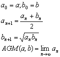

算術幾何平均
程式可以計算兩個正實數的算術幾何平均 (Arithmetic-Geometric Mean)。
程式編寫日期: 2006年11月13日
程式(18步)
| 1 | Kout 1 | 2. | Kin 3 | 3. | Kout 2 | 4. | Kin + 1 | 5. | Kin × 3 |
| 6. | 2 | 7. | Kin ÷ 1 | 8. | Kout 1 | 9. | RND | 10. | - |
| 11. | Kout 3 | 12. | √ | 13. | RND | 14. | Kin 2 | 15. | = |
| 16. | x2 | 17. | x > 0 | 18. | Kout 1 | 19. | 20. |
LRN 模式輸入程式(供 fx-3600PV及fx-3800P使用，程式長度: 18步 )
| Kout 1 | Kin 3 | Kout 2 | Kin + 1 | Kin × 3 |
| 2 | Kin ÷ 1 | Kout 1 | RND | - |
| Kout 3 | √ | RND | Kin 2 | = |
| x2 | x > 0 | Kout 1 | MODE . |
參考公式:

例題: 計算兩數 2及3的算術幾何平均值。
按 2 SHIFT Kin 1 3 SHIFT Kin 2 P1 2 (顯示答案為2.474680436)